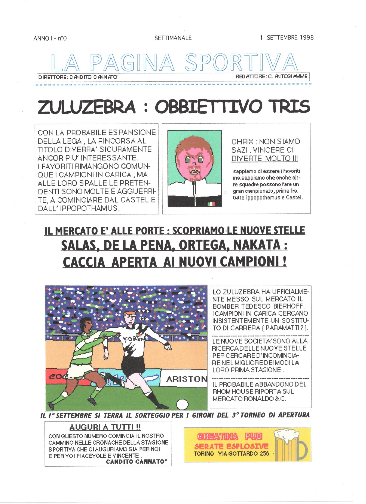

1ª stagione editoriale · 1998/1999
La Pagina Sportiva · 1998/1999
Numero 0 · 1° settembre 1998
«Zuluzebra: obbiettivo tris». Scansione della pagina cartacea originale, presentata senza modifiche al contenuto.

Gli altri numeri saranno aggiunti progressivamente, man mano che verranno digitalizzati.